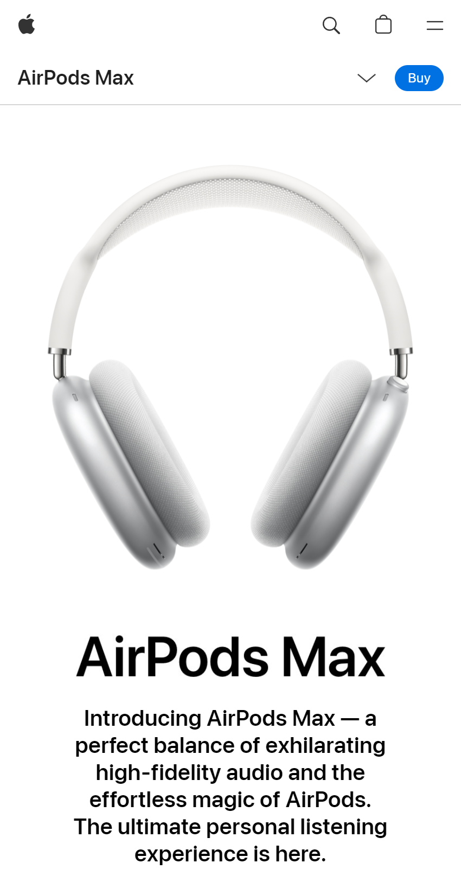
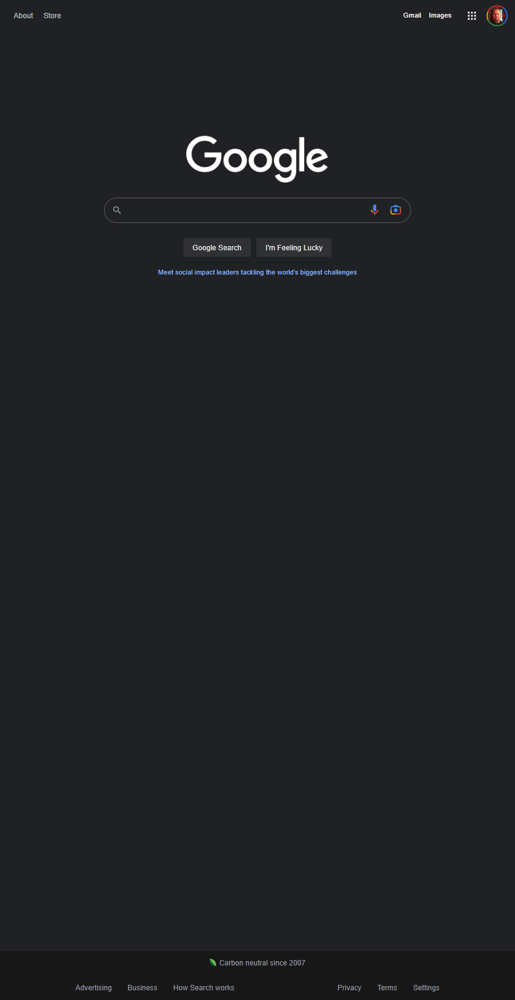
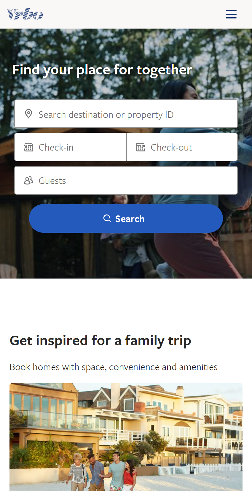

White Space and Clean Design
Apple
Apple.com

Apple does a really good job when it comes to white space and clean desgin. This website for the AirPod Max is no exeption. The use of white space forces user to focus on the product. It also makes the text easy to read and creates a clean and uncluttered look.
Fitt's Law
Google
Google.com

I chose google.com for my example of Fitt's Law. The Google website is very simple with this large search box in the center of the page. This makes it easy for users to target with the mouse or tap using a touch screen. The clean and simple design allow the user to quickly find what they are looking for.
Proximity
Vrbo
Vrbo.com

The Vrbo website uses proximity to help its users quickly scan the page to find the results they are looking for. This search bar at the top is an example of how Vrbo has grouped elements together to make it easy for users to navigate their webpage.